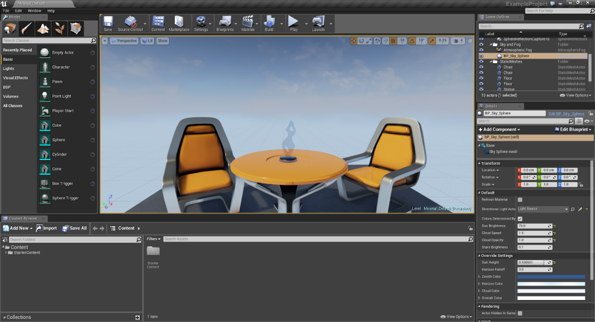

Choosing what game engine you are going to use for the creation of your game is a crucial decision as going with the wrong engine can lead to scrapping the whole project and restarting all over again.
And the answer is…….it depends.

Unreal Engine 4 was my first game engine in my game development journey. From my experience, it can be a fairly heavy program, causing my CPU or GPU usage to skyrocket to 100% when importing assets inside the engine(but that could be just me since my pc isnt the best). Unreal Engine is famously known for the super hyperrealistic graphics reaching the point where they are indistinguishable from the real world and the virtual world. The engine uses the C++ programming language which can be intimidating to beginners or in general, as it tends to not be a not so forgiving language as you’ll have to manually allocate a safe memory space for your code. Despite being a hard language to learn, learning C++ can be very rewarding as it can help learn other languages easier and alot of Game studios use C++ as their main language. Unreal also uses Blueprints, which is blocks of code connecting together also known as optical programming, but my opinion is that it can be fairly limited as you dont actually learn how to code, and it will only get you so far. Unfortunately, one of the downsides of unreal is that there’s barely any tutorials online and especially C++ tutorials, so you are going to have to rely heavily on the documentation.
Arguably one of the most famous if not the most famous game engine is the Unity Game Engine. Unity has a nice documentation but it also has a ton of tutorials online making a far easier game engine to learn compared to Unreal. As for the programming language, Unity can use java but the main programming language is C#, which is a bit more user-friendly compared to Unreal’s C++, as it handles things like garbage collection and memory allocation in the background for you. Unfortunately, because Unity is so famous, it has a bad reputation when it comes to the quality of the games it produces, because alot of beginners use the engine to make very crappy games in order to make some quick money.